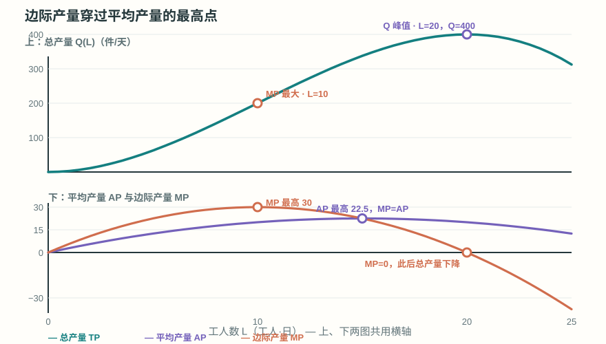
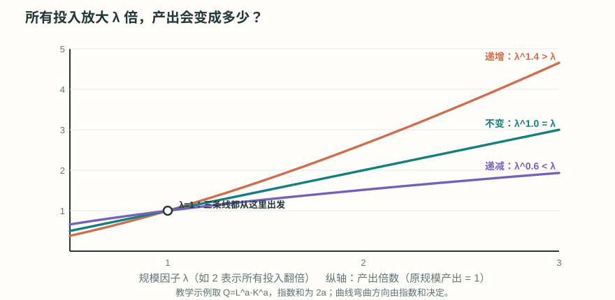

CHAPTER 11 · MICROECONOMICS
生产函数：投入与产出
从第 1 个工人到第 8 个工人：总产量、平均产量与边际产量如何相互约束，短期与长期又在哪里分界。
一家面包店该雇几个工人？
设想你接手一家小面包店：厨房、烤箱和柜台都写进了租约，一天之内无法改变；你能决定的只有雇几个面包师。第 1 个工人把日产量从 0 提到 62.5 件，看起来划算；可当你继续雇人，产量还会按同样的速度增长吗？也许到某个工人，多雇一人反而让效率更低。本章要回答的，就是这类“还能不能再加一个人”的问题。
我们会把“技术”写成一个函数，再用同一组数字读出三条曲线，最后分清两个经常被混为一谈的规律：边际报酬递减（短期、其他投入固定）与规模报酬（长期、所有投入同比例变化）。
生产函数：把技术写成一个关系
生产函数 production function 描述：在给定技术水平下，各种投入组合最多能产出多少。它回答的是技术上限，而不是企业的愿望——同样的劳动与设备，在给定的工艺下有一个客观的最大产量。
现实中的投入很多，为便于分析通常归为两类：劳动 L（工人数、工时、技能）与资本 K（机器、厂房、设备）；土地与原材料可以并入 K，或另设一项。产出 Q 是一个物理量，不是货币量。
在短期里，资本被租约、厂房或设备锁定，记为固定投入 K̄，于是 Q 只随 L 变化。为讲解方便，本章采用一个具体的短期生产函数（假设 / 教学示例）：
选这个函数不是为了逼真，而是因为它恰好把三种现象放进同一张表：产量先加速增长、再以递减速度增长、最后下降。下一节就用它算出总产量、平均产量与边际产量。
总产量、平均产量与边际产量
从同一个生产函数 Q(L) 出发，可以定义三个常用概念：总产量就是函数本身；平均产量是每单位劳动的产出；边际产量是多雇一个工人带来的额外产出。形式上：
把 Q(L)=3L²−0.1L³ 代入，得 AP=3L−0.1L² 与 MP=6L−0.3L²。下表列出几个代表性取值；MP 一栏按导数 Q′(L) 在 L 处的值计算，而非区间平均。表中数字均为教学示例。
| 工人数 L | 总产量 Q | 平均产量 AP=Q/L | 边际产量 MP=Q′(L) |
|---|---|---|---|
| 0 | 0 | — | — |
| 5 | 62.5 | 12.5 | 22.5 |
| 10 | 200 | 20.0 | 30.0 |
| 15 | 337.5 | 22.5 | 22.5 |
| 20 | 400 | 20.0 | 0.0 |
| 25 | 312.5 | 12.5 | −37.5 |

为什么边际产量穿过平均产量的最高点
这张图里最容易被忽略、又最常考的关系是：MP 恰好穿过 AP 的最高点。它不是巧合，而是平均数与边际数的一般规律：新加入的一单位如果比现有平均水平高，平均数就被拉高；如果比平均低，平均数就被拉低；两者相等时，平均数刚好到顶。
因为 L>0，dAP/dL 的符号完全由 MP−AP 决定：MP>AP 时 AP 上升，MP<AP 时 AP 下降，MP=AP 时 AP 达到极值。用表里的数字验证：L=10 时 MP=30>AP=20，AP 仍在上升；L=15 时 MP=AP=22.5，AP 到顶；到 L=20 时 MP=0<AP=20，AP 已回落到 20。
同一张图还给出另外两条边界：总产量在 MP=0 处达到最大（L=20，Q=400），因为此后再雇人只会拖累总产出；总产量在 MP 最大处由陡转缓（L=10），这是增速先从“越来越快”变成“越来越慢”的拐点。
边际报酬递减：固定投入的物理约束
把上表的 MP 一列读出来，就得到一条重要规律：边际报酬递减 law of diminishing marginal returns——在至少一种投入固定不变时，随着可变投入持续增加，每多一单位可变投入带来的边际产量最终会递减。关键在于“最终”：本例如 MP=6L−0.3L²，在 L=10 前 MP 还在上升（分工协作使前几个工人效率更高），到 L=10 达到最高 30 后才持续回落，并在 L>20 后转为负值。
递减的原因不是“工人变懒”或“管理变差”，而是一个物理约束：固定投入（厨房、烤箱、场地）有限，新增工人必须分享有限的空间与设备。田就那么大，再多的劳力也会互相碍事。
三个容易混淆的术语需要分清：
- 边际报酬递减——短期现象，至少一种投入固定，如固定厂房下增加工人。
- 规模报酬递减——长期现象，所有投入同比例增加，如所有投入翻倍而产出不到一倍。
- 负边际报酬——MP<0，多投入反而减少总产量，如前例中 L>20 之后。
短期与长期：按可变性划分
在生产者理论里，“短期”与“长期”不是按日历时间定义的，而是按投入能不能调整：
- 短期 short run——至少有一种投入固定。厂房、设备被租约或建设周期锁定，企业只能调整劳动等可变投入来改变产出。
- 长期 long run——所有投入都可变。企业可以改厂房、添设备、换生产线。
正是固定投入的存在，使短期中出现边际报酬递减；而长期中所有投入可同比例调整，我们讨论的才是规模报酬。两个词的时间跨度因行业而异：对街头小吃摊，短期可能只有几小时；对核电站，短期可能长达数年。
规模报酬：所有投入同比例变化
长期中所有投入都可变，于是可以问：把所有投入同时放大 λ 倍，产出会变成多少？答案有三种可能，统称规模报酬 returns to scale：
- 规模报酬递增：f(λL, λK) > λ·f(L, K)，产出增加超过 λ 倍。常见原因：专业化分工、固定成本分摊。
- 规模报酬不变：f(λL, λK) = λ·f(L, K)，产出精确地变为 λ 倍，相当于把小规模模式复制。
- 规模报酬递减：f(λL, λK) < λ·f(L, K)，产出增加少于 λ 倍。常见原因：管理协调成本随规模上升。
对常见的柯布–道格拉斯（Cobb–Douglas）形式 Q=A·L^a·K^b，把 λ 提出来就能看到判定规则：
于是指数和 a+b>1 为递增，=1 为不变，<1 为递减。下图用三条曲线对比（教学示例，取 Q=L^a·K^a）：

交互实验：拖动工人数
短期生产实验
固定厨房 K̄=1，生产函数 Q(L)=3L²−0.1L³（教学示例）。拖动滑块改变工人数，观察总产量、平均产量与边际产量如何联动。
L=10：Q=200，AP=20，MP=30。
每次根据解析式重新计算，不使用随机值；默认 L=10 对应边际产量的最高点（总产量拐点）。
如果固定资本 K̄ 翻倍（多租一间同样大小的厨房），短期生产函数会怎样变化？MP 的最高点会出现在更大还是更小的 L 处？
查看答案
更多固定资本使每个工人能配合更多设备，整条 MP 曲线一般上移，边际报酬递减的开始点也推迟到更大的 L。但严格比较需要另一条已标定的生产函数；本章的 Q(L)=3L²−0.1L³ 只描述 K̄=1 这一固定资本下的情形，不能直接外推。
引用文献、定义与适用范围
本章的曲线与表格数值由假设函数 Q(L)=3L²−0.1L³（K̄=1）推导，属于教学示例，不是观测数据；生产函数、边际报酬递减以及短期/长期的定义与图形参考以下教材：
- OpenStax · Principles of Microeconomics 3e, Ch. 7: Production, Costs, and Industry Structure
- OpenStax · Principles of Microeconomics 3e（教材首页）
需要提醒的是：本章只讨论生产的技术关系，不涉及成本、价格与利润。把物理产量转成货币量、以及企业在不同市场结构下的决策，分别属于后续章节。